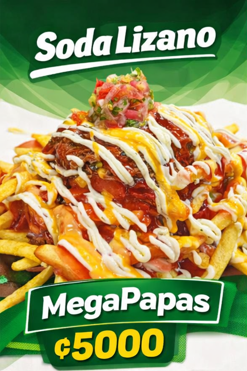
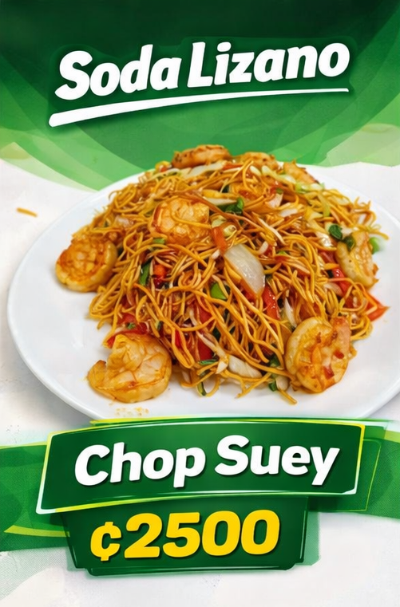
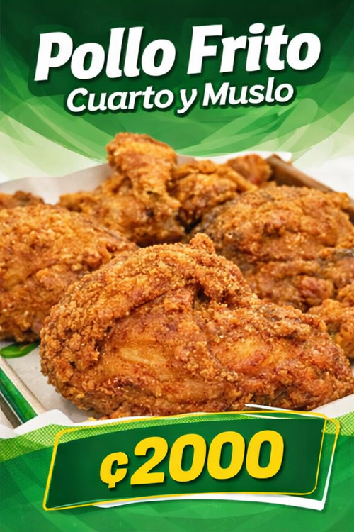
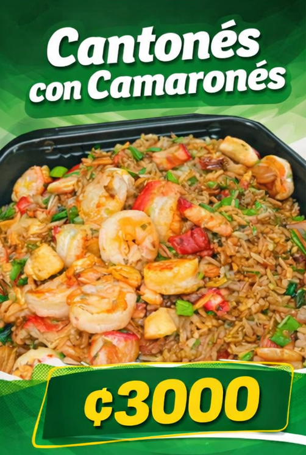
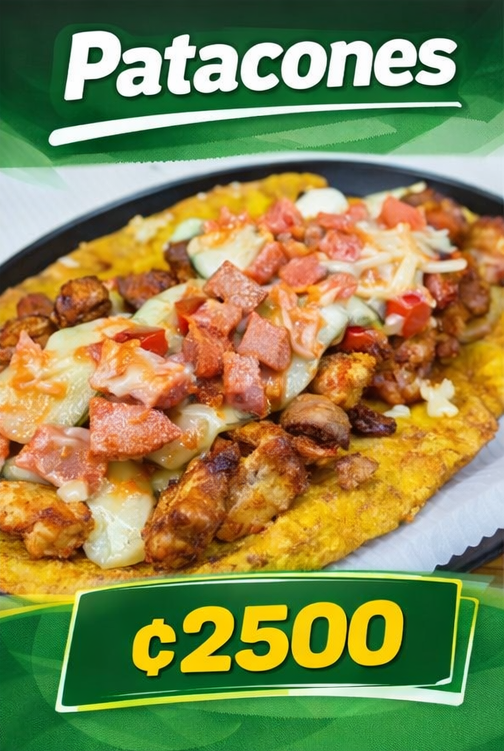
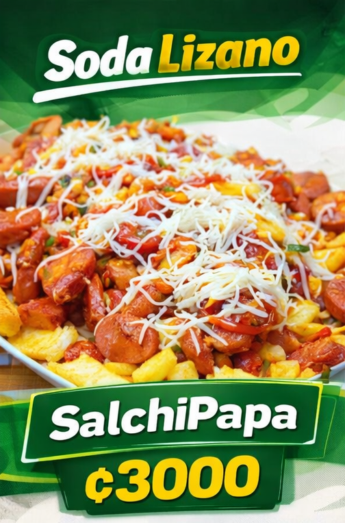
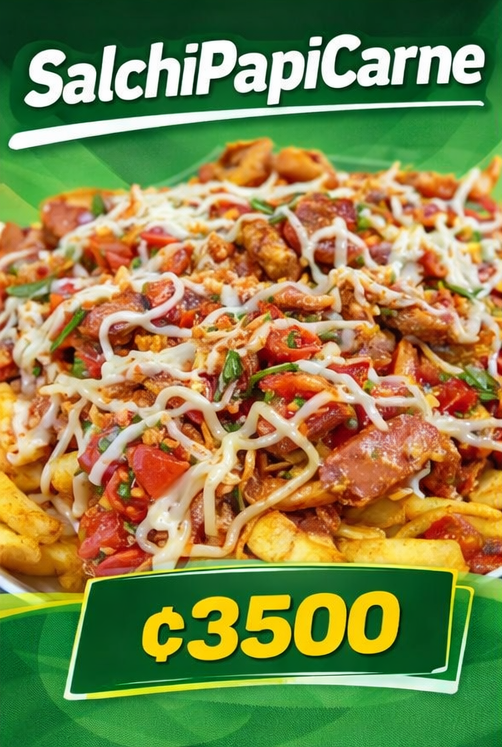
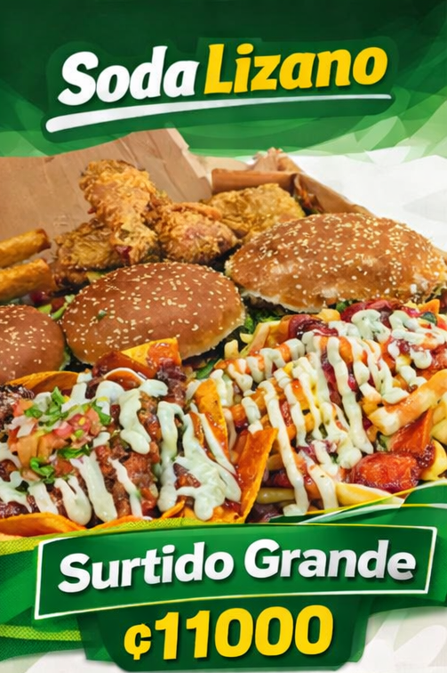

Deliciosas papas fritas crujientes acompañadas de salsa especial de la casa. Perfectas para compartir.

Mezcla de vegetales frescos salteados con arroz y tu elección de pollo o carne. Sabor oriental auténtico.

Jugoso pollo frito con nuestra receta secreta de especias. Servido con ensalada fresca y papas.

Arroz frito estilo cantonés con vegetales, huevo y tu proteína favorita. Una explosión de sabores.

Plátano verde frito y aplastado, crujiente por fuera y suave por dentro. Acompañado de frijoles molidos.

Clásica combinación de salchichas y papas fritas con salsas variadas. Un favorito de todos.

Nuestra salchipapa especial con jugosa carne de res, papas fritas y salsas de tu elección.

Una combinación de todos nuestros mejores platillos. Perfecto para compartir en familia o con amigos.